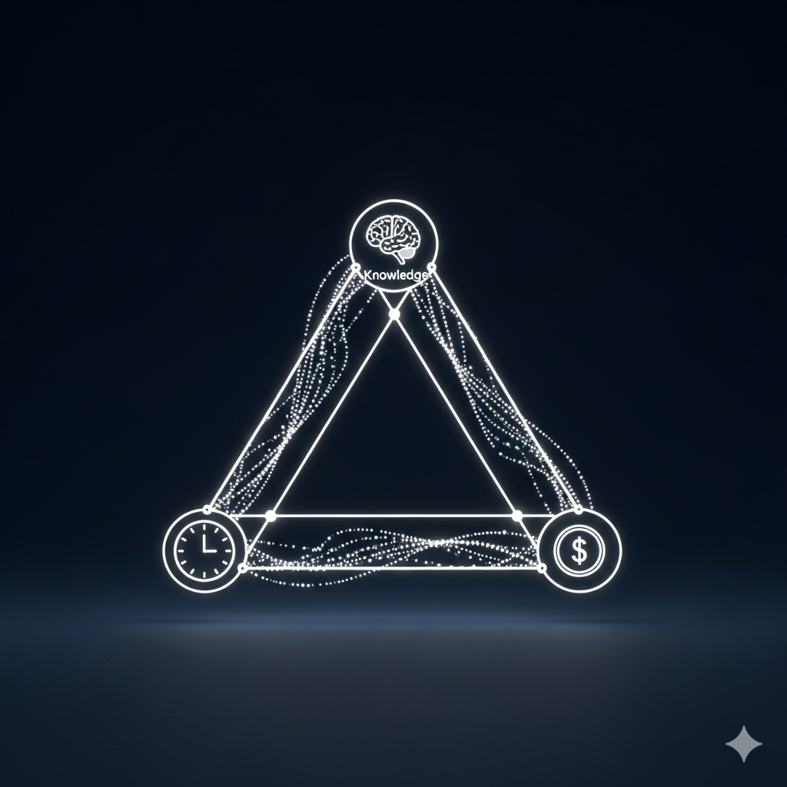
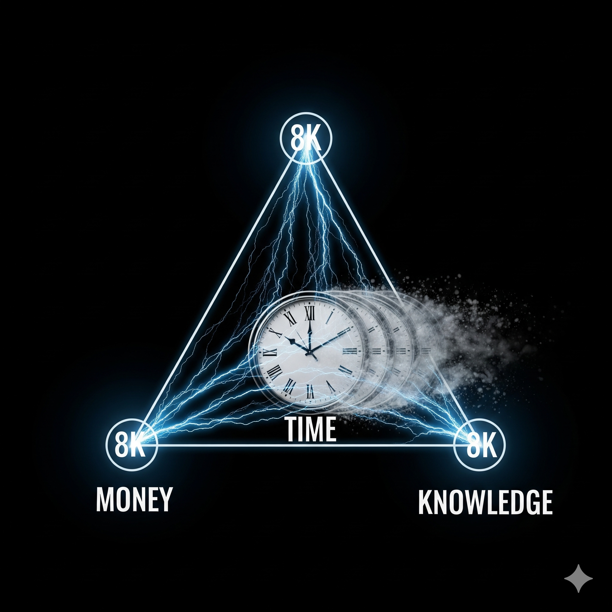

Prolog: Decodarea sistemului de operare al realizării
În marea ecuație a vieții și a realizărilor profesionale, fiecare dintre noi funcționează ca un sistem complex, jonglând constant cu trei resurse fundamentale: cunoștințele (capitalul intelectual), timpul (capitalul temporal) și banii (capitalul financiar). Imaginați-le nu doar ca pe niște resurse separate, ci ca pe vârfurile interconectate ale unui triunghi dinamic. Adevărata putere și echilibru nu derivă din a le poseda pe toate în abundență, ci din măiestria cu care le convertești strategic una în cealaltă. Forța și echilibrul tău nu se măsoară în posesia abundentă a fiecărei resurse, ci în abilitatea ta de a le transforma reciproc – de a converti lipsa uneia în oportunitatea celeilalte două. Aceasta este arta subtilă care separă excelența de mediocritate, un principiu validat atât de neuroștiințe, cât și de teoriile economice moderne privind eficiența și adaptabilitatea.
Principiul fundamental: Convertirea strategică a resurselor
Este o lege a eficienței: Principiul este simplu în formulare, dar profund în aplicație: atunci când o resursă este limitată, folosește-le pe celelalte două, în mod deliberat, pentru a o dobândi. Această abordare nu este o admitere a deficienței, ci o manifestare a designului inteligenței adaptative a minții umane. O strategie rafinată, care activează plasticitatea cognitivă, optimizează alocarea atenției și valorifică capitalul intelectual și material pentru a genera noi resurse. Aceasta nu este o recunoaștere a slăbiciunii, ci cea mai inteligentă strategie de management al resurselor personale. Este un algoritm de eficiență care, odată înțeles și aplicat, deblochează un potențial exponențial. Să analizăm fiecare vector de conversie.
1. Vectorul de creație: Când capitalul financiar este limitat, investește timp și cunoștințe

Aceasta este realitatea fundamentală a oricărui început de drum, fie că vorbim de o carieră, o afacere sau un nou domeniu de expertiză. Este realitatea inițială a majorității celor care aspiră la progres. Lipsa banilor este adesea percepută ca o limitare insurmontabilă, dar adevărul Științei Decizionale arată că timpul și cunoștințele reprezintă monedele esențiale ale investitorului în propria dezvoltare. Nu ai capital de investit? Irelevant. Deții două monede la fel de valoroase, adesea subestimate: timpul disponibil și capitalul tău intelectual existent.
Perspectiva științifică: Conceptul de "capital uman" din economie definește perfect această etapă. Timpul investit în practică deliberată (conform cercetărilor lui Anders Ericsson) pentru a dobândi o abilitate nu este timp pierdut, ci o investiție directă în creșterea valorii capitalului tău uman. Fiecare oră de studiu concentrat, fiecare proiect personal, fiecare carte citită adaugă valoare acestui activ, care va genera un randament (ROI) pe tot parcursul vieții.
Strategia de conversie:
- Folosește-ți timpul ca un instrument strategic. Folosește-ți timpul pentru a învăța sistematic o abilitate cu cerere mare pe piață. Nu învăța la întâmplare. Analizează piața. Identifică unde există un deficit de competență și un surplus de cerere (programare, data science, marketing digital, copywriting specializat, design UX/UI). Timpul tău este limitat; investește-l acolo unde randamentul este maxim.
- Folosește-ți cunoștințele actuale pentru a crea valoare imediată. Oricare ar fi nivelul tău, deții cunoștințe pe care altcineva nu le are. Oferă servicii de consultanță, creează un produs digital de nișă (un curs online, un ghid practic, un template), scrie articole plătite. Nu aștepta perfecțiunea. Monetizează ceea ce știi deja, în timp ce înveți ceea ce îți dorești să știi.
Formula de succes: `(Timp × Practică deliberată) + (Cunoștințe aplicate × Nevoie de piață) = Generare de Capital Financiar + Oportunități + Venituri sustenabile`
În acest scenariu, timpul tău, ghidat de inteligență strategică, nu doar că se transformă în bani, ci construiește un activ (capitalul uman) care va continua să producă valoare pe termen nedefinit. Neuroștiințific vorbind, acest proces activează circuitele dopaminergice ale recompensei, sporind motivația și consolidând obiceiuri eficiente.
2. Vectorul de multiplicare: Când capitalul temporal este limitat, investește bani și cunoștințe
Pe măsură ce avansezi și responsabilitățile tale cresc, timpul devine o resursă volatilă ce necesită protecție și maximizare. Ai ajuns în punctul în care succesul tău a generat cea mai mare constrângere: lipsa timpului. Agenda este plină, fiecare oră contează, iar creșterea pare să fi atins un platou. Ești blocat? Doar dacă gândești liniar. Acum este momentul să aplici principiul fundamental al scalării: cumpără timp.
Perspectiva științifică: Teoria Constrângerilor (Eliyahu Goldratt) ne învață că orice sistem are un singur blocaj major la un moment dat. Pentru profesionistul ocupat, acest blocaj este timpul. Soluția inginerească este să aloci resurse (bani) pentru a elimina sau a diminua acest blocaj. Mai mult, Principiul Pareto (80/20), aplicat prin prisma cunoștințelor tale, îți permite să identifici cele 20% din activități care generează 80% din rezultate. Acestea sunt activitățile pe care trebuie să le păstrezi. Restul de 80% sunt candidate perfecte pentru delegare.
Strategia de conversie:
- Folosește-ți banii pentru a delega sarcini cu valoare adăugată redusă. Nu este un lux, este o investiție în eficiență. Angajează un asistent virtual pentru a gestiona emailurile și programările. Externalizează contabilitatea și sarcinile administrative. Plătește pentru servicii care îți eliberează ore prețioase (curățenie, livrare de mâncare, mentenanță). Cumperi, de fapt, lățime de bandă cognitivă, eliberându-ți mintea de zgomotul operațional pentru a se putea concentra pe gândire strategică.
- Folosește-ți cunoștințele pentru a identifica și implementa sisteme de automatizare. Analizează-ți fluxurile de lucru. Ce procese repetitive pot fi automatizate cu software? (ex: CRM-uri, unelte de email marketing, software de management de proiect). O investiție unică într-un sistem poate elibera sute de ore pe parcursul unui an.
Formula performanței: `(Capital Financiar Investit în Pârghii) + (Cunoștințe despre Optimizarea Sistemelor) = Suveranitate Temporală (sau Timp recuperat și reinvestit în priorități strategice)`
Banii devin o unealtă pentru a multiplica cea mai prețioasă și non-regenerabilă resursă a ta: timpul. Nu doar câștigi ore, ci îți recapeți controlul asupra direcției strategice a vieții tale. Aceasta este o manifestare practică a principiilor time managementului avansat și se aliniază perfect conceptului științific al „alocării eficiente a resurselor cognitive și materiale”.
3. Vectorul de accelerare: Când capitalul intelectual este limitat, investește timp și bani

Te afli în fața unui domeniu nou, a unei tehnologii disruptive sau a unei provocări strategice care te depășește. A recunoaște o lipsă de cunoștințe nu este o slăbiciune, ci un diagnostic precis. Ignoranța este doar un obstacol temporar, nu o sentință.
Perspectiva științifică: Neuroplasticitatea este capacitatea creierului de a se reorganiza prin formarea de noi conexiuni neuronale. Învățarea este un proces fizic. Investind timp în studiu, construiești aceste căi. Investind bani, accelerezi dramatic acest proces. Un mentor sau un curs premium nu îți oferă doar informație, ci o cale neuronală deja optimizată. Primești o hartă care te ajută să eviți fundăturile, scurtând procesul de învățare de la ani la luni. Aceasta este cea mai directă aplicație a conceptului de "învățare accelerată".
Strategia de conversie:
- Folosește-ți timpul pentru imersiune fundamentală. Construiește o bază solidă. Citește cărțile esențiale din domeniu, urmărește cursuri online de la universități de top, ascultă podcasturi cu experți, înconjoară-te de informație relevantă. Acesta este fundamentul.
- Folosește-ți banii pentru a cumpăra viteză și structură. Investește într-un mentor sau un coach care a parcurs deja drumul și îți poate oferi feedback personalizat, ajutându-te să eviți efectul Dunning-Kruger (incompetența de a-ți recunoaște incompetența). Cumpără cursuri premium, participă la workshopuri intensive, alătură-te unor comunități de elită (masterminds). Plătești nu doar pentru informație, ci pentru context, rețea și claritate.
Investiția supremă: `(Timp × Studiu Concentrat) + (Investiție Financiară în Mentorship) = Competență Accelerată (Claritate, competență, autonomie decizională)`
Neuroplasticitatea răspunde prin remodelarea circuitelor neuronale, creând noi conexiuni și facilitând o gândire critică și adaptativă. Aceasta este cea mai sigură investiție, cu un randament compus garantat pe viață. Cunoștințele dobândite devin parte din capitalul tău uman, gata să fie reinvestite pentru a genera mai mulți bani sau mai mult timp.
Concluzie: Ești alchimistul propriului sistem

Nu te bloca niciodată în paradigma limitativă a lui "nu pot pentru că nu am...". Aceasta este mentalitatea fixă. Adoptă mentalitatea de creștere a unui inginer de sisteme și întreabă-te mereu: "Din resursele pe care le am în abundență, cum pot crea resursa care îmi lipsește?" În această întrebare se află cheia către o transformare fundamentală, activată de o minte orientată spre soluții și adaptabilitate.
Analizează-ți triunghiul. Care vârf este cel mai slab în acest moment al vieții tale? Care sunt cele două vârfuri puternice?
Ești un alchimist. Ești creatorul propriei realități, iar resursele tale – fie ele timp, bani sau cunoștințe – sunt elementele de bază în laboratorul minții tale. Iar mintea ta este laboratorul unde, prin strategie și intenție, timpul se transformă în bani, banii în timp liber, și ambele, catalizate de experiență, se transformă în înțelepciune și putere autentică.
Acum, pune-le la treabă, câștigă-ți puterea și fă primul pas spre o viață delimitată de echilibru, succes și împlinire reală!